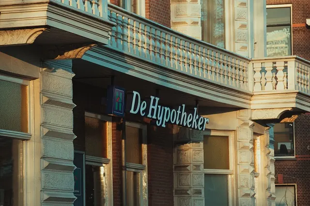
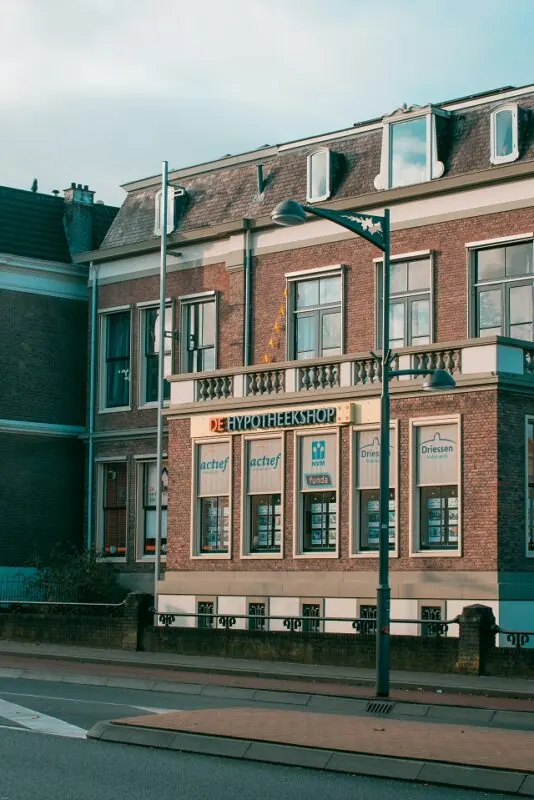

Partnerbijdrage
Zoek je een hypotheek? Lees deze essentiële info!
Gepubliceerd op 14 november 2022, bijgewerkt op 20 februari 2024

Wil je een huis kopen in Nijmegen en/of je hebt al heel wat gespaard op je bankrekening, maar je hebt nog niet genoeg om volledig dat mooie huis of leuke appartementje te kunnen betalen? Dan biedt een hypotheek uitkomst. Het is erg belangrijk om je vooraf goed te oriënteren alvorens je daadwerkelijk een hypotheek afsluit, want er zijn enorm veel verschillende hypotheekvormen- en constructies met allemaal andere kenmerken. Denk bijvoorbeeld aan het verschil in maandlasten, de fiscale aftrekbaarheid en aflossing. Bovendien is een hypotheek natuurlijk een grote en belangrijke beslissing waar veel geld mee is gemoeid en waar je niet zomaar even van afstapt.

Oriëntatie
Het is belangrijk om jezelf enkele vragen te stellen tijdens je oriëntatieproces. Weet wat je aan vaste woonlasten per maand wilt en kan uitgeven en hou rekening met veranderingen in je (toekomstige) persoonlijke situatie. Vraag je ook af of je zekerheid wilt of bereid bent enige risico te lopen. Als je antwoorden op deze vragen hebt, is het een stuk makkelijker kiezen welke hypotheek bij je past. Je kunt een hypotheek direct afsluiten bij een bank zoals de Rabobank, ING of SNS Bank, maar ook bij diverse instellingen zoals Centraal Beheer of De Hypotheker. Een hypotheekadviseur in Nijmegen maakt je dan wegwijs in de verschillende soorten mogelijkheden. In de meeste gevallen wordt een hypotheek voor dertig jaar afgesloten. Zoals gezegd zijn er vele hypotheekvormen, we bespreken hieronder de meest voorkomende leningen.
Soorten hypotheekvormen
Doorgaans kiezen veel mensen voor een aflossingsvrije hypotheek. Een hypotheekvorm waarbij je over de hele looptijd van de hypotheek alleen maar de rente betaald. Voordelen van deze lening zijn dat je doorgaans lage netto maandlasten hebt, omdat je alleen maar de rente betaald. En je profiteert gedurende de gehele looptijd van de fiscale aftrek. Nadeel is natuurlijk dat je op het einde van, zeg dertig jaar, nog wel het volledig geleende bedrag moet terugbetalen. Je hebt immers geen vermogen opgebouwd. Vaak wordt een aflossingsvrije hypotheek gecombineerd met een andere hypotheekvorm om de maandlasten zo laag mogelijk te houden. Een gedeelte van de lening is dan aflossingsvrij en voor het overige gedeelte kan bijvoorbeeld een spaarhypotheek worden afgesloten.

Spaarhypotheek
Een spaarhypotheek bestaat uit een combinatie van een hypothecaire lening en een levensverzekering. Tijdens de looptijd spaar je exact het bedrag bij elkaar dat je aan het begin hebt geleend. Omdat de hypotheekschuld na de looptijd volledig kan worden afgelost, biedt deze hypotheekvorm veel zekerheid ten opzichte van andere hypotheekvormen. Een punt waar je rekening mee moet houden, is dat de spaarrente gekoppeld is aan de hypotheekrente. Als deze dus laag is, krijg je ook dezelfde lage rente voor je gespaarde centen.
Hybride Hypotheek
Wie een risico niet schuwt en zijn of haar geluk wil uitproberen, kiest wellicht voor een hybride hypotheek. Deze hypotheek is een mengeling van een spaarhypotheek en een beleggingshypotheek, waar tevens een overlijdensrisicoverzekering aan is gekoppeld. De hybride hypotheek wordt ook wel een combinatie- of spaarbeleggingshypotheek genoemd. Kenmerkend voor deze hypotheek is dat je de lening niet aflost, maar gedurende de hele looptijd rente over het volledige hypotheekbedrag betaalt die je onder voorwaarden kunt aftrekken. Daarnaast betaal je premie voor beleggingen of om te sparen. Je kunt zelf kiezen wanneer je de lening als een beleggings- of als spaarhypotheek wilt gebruiken. Als de aandelenmarkt goed loopt kun je dus een hoger rendement krijgen.
Annuïteiten Hypotheek
Ben je een starter dan mag je sinds 2013 alleen nog maar een Annuïteiten of Lineaire hypotheek afsluiten als je nog recht wil hebben op hypotheekrenteaftrek. Bij een Annuïteiten hypotheek verandert de samenstelling van het bedrag elke maand. Waar je eerst veel rente betaald en weinig aflost zal je in de loop der jaren steeds meer gaan aflossen en steeds minder rente betalen. En dit komt natuurlijk ten goede op de (over)waarde van het huis. Kenmerkend van deze hypotheek is dat je aan het einde van de looptijd het volledige bedrag hebt afgelost. Wel zo fijn idee! De reden dat men veel voor deze hypotheek kiezen in plaats van een Lineaire is dat de maandelijkse kosten een stuk lager zijn.

Lineaire Hypotheek
Net zoals de Annuïteiten hypotheek kan je de Lineaire hypotheek alleen nog maar afsluiten wanneer je starter bent en je gebruik wilt maken van de hypotheekrenteaftrek. De maandlasten bij een lineaire hypotheek bestaat uit twee onderdelen namelijk rente en aflossing. Het maandbedrag van het aflossing blijft gedurende de looptijd gelijk, maar de rente zal elke maand lager worden.
Wanneer je de Lineaire- en Annuïteiten hypotheek naast elkaar legt zijn er twee grote verschillen. De Lineaire hypotheek is goedkoper dan een annuïteiten hypotheek omdat je over de gehele looptijd minder rente hoeft te betalen. Bij een Annuïteiten hypotheek blijft het bedrag wat je maandelijks betaald voor je woning gelijk terwijl bij een Lineaire hypotheek het bedrag bij aanvang heel hoog is maar deze elke maand een stukje lager
Meer informatie
Bovenstaande hypotheken zijn maar een greep uit de vele mogelijkheden. Andere niet genoemde hypothekenvormen zijn bijvoorbeeld, een beleggingshypotheek of een levenhypotheek. Wil je meer informatie over het verkrijgen van een hypotheek voor je huis in of rondom Nijmegen kan je naar één van de vele hypotheekadviseurs in Nijmegen gaan en hun kunnen je er meer over vertellen.